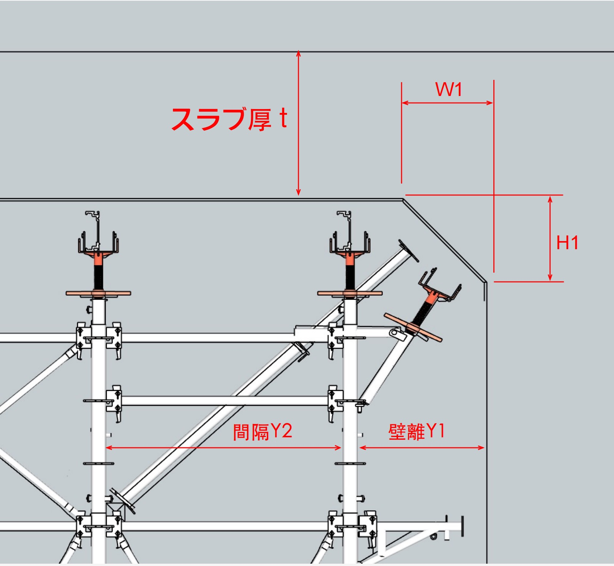

ハンチ部 支柱・スラブ根太・斜部構造材 統合計算
【条件・許容荷重】
コンクリート重量 ρ
kN/m³
型枠・支保工重量 W0
kN/m²
衝撃荷重 Wc
kN/m²
支柱許容荷重 P
kN
【入力項目】
ハンチ高さ H1
cm
ハンチ幅 W1
cm
スラブ厚 t
cm
大引きX1
cm
大引きX2
cm
壁との離れ Y1
cm
支柱ピッチ Y2
cm
作業床高さ
cm
【スラブ側 張り出し 根太材（方持ち梁）】
スラブ根太ピッチ Ln
cm
材種
単管パイプ φ48.6
60角鋼管
100角鋼管
ストロングライト
【斜部構造材（型枠〜大引き）】
型枠材
合板 t=12mm
ハンチメタルフォーム t=55mm
ハンチ根太材
単管パイプ φ48.6
60角鋼管
100角鋼管
ストロングライト
ピッチ
cm
中引き材
単管パイプ φ48.6
60角鋼管
100角鋼管
ストロングライト
ピッチ
cm
大引き材
スライドパワー (L≦1800)
スライドパワー L=1800~2400
スライドパワー ダブル（中間ジョイントあり）
スライドパワー ダブル（中間ジョイントなし）
90角端太角（すぎ）
100角端太角（すぎ）
ピッチ
cm
【サポート】
種類
パイプサポート（19.6kN）
ハンチサポート（34kN）
本数
本
奥行 Sp1
cm
奥行 Sp2
cm
計算

【計算結果】